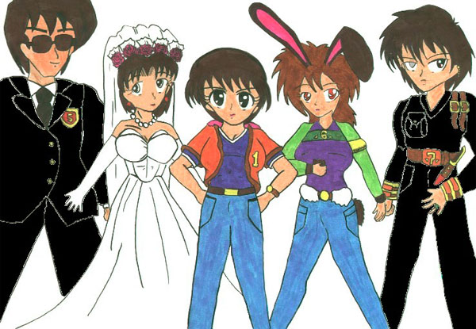

これは、真城様の「いちごちゃんシリーズ」の他に、Ｚｙｕｋａの手による「りくとななのおまけ付き華代ちゃん研究」に関係がある作品です。まだ双方を読んでおられない方は、先にそちらを読まれることをおすすめします。
ハンター組織の本部には、更衣室と呼ばれるものが３つ存在する。
ひとつは男性用、もうひとつは女性用、そして最後のひとつは・・・？
『真城華代被害者用更衣室』
３番目の更衣室にはそういう札がかかっていた。
「はううう・・・」
『真城華代被害者用更衣室』の中のロッカーの前で一人の少女がため息をついている。
ロッカーのネームプレートは「半田りく」・・・彼女の名前だ。
「はううう・・・」
少女、りくはロッカーの扉を開け・・・そこにある鏡を見たとたん・・・
ぽっ・・・
バタン！！
「・・・なんでこんなことになっちゃったんだろう？」
彼女は自分の体を見下ろし、再び赤くなった。
今の彼女の姿はというと・・・その・・・何というか・・・チトとんでもない格好をしていた。
ある動物を模した衣装・・・その動物とは・・・ウサギ！！しかも黒ウサギ！！
肌に密着した黒いスーツ、おしりには同じ色の尻尾。編みタイツに包まれた足の先はやっぱり黒いハイヒール。首には黒い蝶ネクタイ。きわめつけは頭の上ににょっきりと伸びた長い耳・・・
ようするに、バニーガールなのである。
「ぬ、脱がなきゃいけないよな・・・いつまでもこんな格好をしているわけにはいかないし・・・でも、でも・・・」
ロッカーの中には、ハンターの標準服である、黒いスーツ・・・
「あ、あり・・・」
ハンター用の黒いスーツはなく、なぜかレオタードみたいな形の服が入っている。犯人は言わずともわかってくる・・・
「・・・５号か・・・７号当たりか・・・？」
さらには、彼女用にオーダーメイドした・・・いや、組織のある一部の人間が彼女のために“面白がって”オーダーメイドしまくった、ブラやショーツが入っている。
「・・・そんな物を身に付けるなんて、は、恥ずかしい・・・」
今のバニーガールの格好のほうが余計恥ずかしいと思うが・・・
「そ、それに、この体・・・見てもいいのかな・・・い、いや、俺の体なんだけど。でも、その・・・」
半田りくは、ぶつぶつそうやいている。
・・・彼女には意味はわかっているらしいが、聞いているほうにとっては、ちんぷんかんぷんだ。
「・・・・・・全部、俺の体を全部・・・いや、でも」
「何やっているんだ、りく？」
「はわぁぅ！！い、苺！！い、いつからそこに！！？」
「さっきからいたよ・・・」
りくのそばにいた高校生ぐらいの女の子。彼女はこの『真城華代被害者用更衣室』のもう一人の使用者、半田苺であった。
「りく・・・いつまでそんな格好をしているんだ？早く着替えてしまえよ」
苺は、その容姿に似合わない口調でそういい、自分のロッカーを開けると、ぱっぱと着替えをはじめる。
「・・・お前、その・・・恥ずかしく、ないのか？」
「恥ずかしいわい！！でもな・・・そんな格好をしているより、まだましだろう！！」
「そ、そうだよな・・・」
ここまで書いて、二人のことがよくわからないという人のために、一応説明しておこう。
彼女達、「半田苺」と「半田りく」。苗字が同じだが、別に姉妹というわけではない。彼女達はこのハンター組織のエリートエージェント「ハンター」と呼ばれる者達のメンバーだった。「半田苺」・・・元々は「ハンター１号」、「半田りく」・・・元々は「ハンター６号」・・・
二人とも、元男、有能なハンターだったのだ。
二人がなぜこんな姿になってしまったのか・・・それには、真城華代という、一人の少女がかかわっている・・・
詳しくは・・・苺ちゃんシリーズを読めばわかります。
「うう・・・」
「まだ決心がつかないのか？」
苺は、もう着替えを終了している。しかし、りくはまだバニーガールのまま。手にショーツを握り締め、涙を流している。
「別にショーツをはきたくないんなら、はかなくてもいいんだぜ？俺みたいに、トランクスでもいいじゃないか！」
「うう、俺はブリーフ派だったんだよ」
「・・・だったら、それでいいじゃないか！！」
苺とりく・・・どちらかといえば、りくの方が年上に見える・・・が、ハンターとしても、また女としても、苺のほうが幾分は先輩だった。
だからこそ、というわけではないだろうが、苺はりくをゆっくりと説得する。
「確かに、俺たち華代被害者はこういう目にあう。それは、被害にあっていないものにとっては理解できないものだ。しかし、理解できるものもいる。お前にとって、俺がそうだ！！」
「い、苺・・・」
「俺とお前は同じ目に会った。だからこそ、理解し合える。一人より、二人のほうが乗り越えることができるんだ。お前には、俺がついてる。安心しろ！！」
なんか、突込みどころ満載って感じだが・・・じっと見詰め合う二人の少女・・・やがてりくはこっくりとうなづく。
「わかった、俺・・・がんばるよ・・・」
「そのいきだ。りく・・・いや、６号・・・」
「ああ、そうだな１号・・・」
ついにりくは意を決してバニーガールの衣装を脱ぎはじめる。
ポロリ、とこぼれ落ちた胸のふくらみに、再度顔を紅潮させ・・・
（俺よりでかい・・・）
そんな苺の嫉妬も気づかず、恐る恐る服を脱いでゆく。
「・・・あれ？」
りくがスーツを脱ぎ、ブリーフを手に取ったときだった。
「・・・その尻尾。取れないのか？」
「へ？」
そう。りくのおしりにはまだ、ウサギの尻尾がくっついたままだったのだ。
「ど、どうなっているんだ？」
りくは今脱いだばかりのバニースーツを見る。お尻の部分には、丸く穴があいている・・・・・・
「・・・・・・」
そう、りくの尻尾は、彼女の体にくっついているのだ。
「・・・・・・」
ふと、彼女は目線を上に上げる。そこには、バニーガールの必須アイテム“ウサ耳”が存在している・・・・・・
「・・・・・・」
無言でそれを引っ張ってみる。そしてそれも・・・
「・・・・・・取れない」
「り、りく・・・・・・」
『真城華代被害者用更衣室』の中に、重たい空気が流れる・・・そういえば、りくの瞳はうさぎ達と同じ、赤い瞳だ・・・・・・
「何で僕がそんなことをしなければならないんですか！？」
ハンター組織の本部、ボスの司令室で、一人の若い男が声を荒げる。
「何で、だと・・・？」
その男と対峙している者は、ハンター組織の首領、通称ボスだ。
「あのウサギはお前が連れてきたんだろうが！！ええ、ななちゃん！！」
「ななちゃんなんて呼ばないでください！！僕は７号です！！」
若い男はハンター７号。通称は“ななちゃん”。
ある任務の失敗の罰として、ななちゃんと呼ばれるはめになってしまったのだった。
「僕はまだあきらめていません。次こそはこの僕の頭脳を使い、真城華代を無力化して見せます！！そのための経費を・・・」
「その前にあの２羽のウサギのために、ウサギ小屋を造ってやれといっているのだ。わかるだろ、ななちゃん」
「だからその名前で呼ばないでください！！」
７号がそう叫んだ瞬間、
バァン！！
司令室のドアが勢いよく開き、一人の人間が飛び込んできた。
「いっ！！」
「う、うわ・・・」
ボスと７号の目が大きく開かれる。
飛び込んできたのはりくだった。
しかも、素っ裸の・・・というか、ウサ耳と尻尾をつけてはいるが・・・
「ななーーーーー！！」
「り、り、り、り、りく先輩・・・・・・ど、どうしたんですか？」
「そうだぞ、おい、りく・・・」
「見るなーーーーー！！」
ドカッ！！バギッ！！
りくに続いて飛び込んできた人影が、７号とボスを打ちのめす。
「りく！！そんな格好で男の前に出るな！！とりあえず服を着ろ！！」
飛び込んできた人影・・・苺はそう叫んで、りく用のレオタードを放り投げた。
「・・・これ、完全に体の一部になってますね・・・」
顔をはらしつつ、右の銀色の目で、りくのウサ耳と尻尾を見た７号がそういった。
「てことは、本当に取れないのかそれ・・・」
同じく、顔をはらしたボスがそういう。
「切除手術でもしない限り、まず取れないでしょうね」
７号は右目にカラーコンタクトをはめなおす。
彼の右目は、肉眼では見えないものを見ることができる特殊な瞳だった。
「・・・・・・なな、お前の力で、これは取れないのか？いや、悪知恵でもいいから！」
「僕の力は見るだけです。それに、これは悪知恵でどうこうなるものじゃないでしょう・・・」
「ふ、ふ、ふ、そうなのか・・・」
「り、りく・・・・・・」
「ふわーーーーーーーーーん」
りくは猛然と立ち上がり、大ダッシュ！！・・・・・・そのまま司令室を飛び出していった。
「おーーーい、りくぅ！！！」
苺も、それを追って飛び出していく。
司令室には、ボスと７号、二人の男が取り残された。
「りくも、苺のように引き篭もるつもりなのかなぁ、・・・・・・どう思う、ななちゃん・・・？」
「その名前で呼ばないでください。ま、苺先輩がどうにかしてくれるんじゃありませんか？それよりボス・・・・・・」
「うん？」
「あれ、ダビングしてもらえませんか？」
７号が指差した先。そこにあったのは、防犯用に仕掛けられていた防犯カメラだった。そこには、りくが飛び込んできたときから、苺とともに着替えをするまでが、克明に録画されているはずだ・・・・・・
「悪知恵・・・・・・絶好調なようだな・・・・・・」
「ええ。それが僕のとりえですから」
「うむ、次の作戦、期待しているぞ」
「ウサギ小屋を作ったあとで、ですけどね・・・・・・」
めでたし、めでたし？なわきゃないですね。

「そうそう、そこでふるいにかけてね」
「はーい」
二人の女性が、台所で料理をしていた。
二人ともおそろいのエプロンを、一人はあまり汚さずに、もう一人は汚しまくっている。そして、汚しまくっているほうの少女の頭には、なぜか黒いウサギの耳がついている。
エプロン姿のウサ耳少女・・・なんか、交錯的な気分にさせられるが・・・・・・
ブワッ！！
「わっ、わっ！？」
ふるいにかけていた小麦粉が、何をどう間違ったのか、あたり一面に飛び散り、ウサ耳少女の顔を白く染める。
「ちょっと！気をつけなさいよ」
「すいません」
謝りながらも少女は、
（・・・・・・なんで俺がこんなことをしなけりゃなんないんだよ・・・）
と思っていた。
（・・・・・・ななのやつ・・・・・・折り入って頼みがあるって言ってきたと思ったら・・・・・・ケーキを作れだぁ！？）
ウサ耳少女は・・・りくちゃんは、今はこの場にはいない、後輩であり、ハンター仲間であり、そして今の現状を作り出した張本人である。ハンター７号、通称ななちゃんに対して、心の中で悪態を付いた。
と・・・・・・
パフッ！！
「あ・・・・・・」
考え事をしていたのがいけなかったのだろうか。再び失敗。エプロンに汚れが増える。
「ほらほら。なにやっているのよ！」
ケーキ作りを教えていた女性が、慌ててフォローを入れる。すると、
「ふんぎゃぁーーー」
となりの部屋から、赤ん坊の泣き声が・・・・・・
「あ、ちょっと待っててね。オムツかしら、それともミルク？」
「・・・すっかりお母さんだな・・・・・・２号のやつ・・・」
そう、りくがケーキ作りを教えてもらっていたのは元同僚であり、元ハンター仲間である、元ハンター２号（現人妻・一児の母）であった。
「はぁ・・・」
りくは、元２号がいない間に、台所の様子を観察した。
「これは、料理の他に、掃除もやらされそうだな・・・」
「ほい、約束の品だ」
「なに怒ってるんですか？先輩」
ハンター本部に戻ったりくは、７号に今作ったばかりのケーキを押し付けた。
「とにかく、なんに使うんだよ、こんなの！？」
「何って、僕らハンター組織の役目はわかっているはずでしょ？」
「というと？」
「真城華代の無力化。それに使うんですよ」
「・・・・・・え・・・・・・」
りくの中に、ある疑念が生まれる。
「ふふふ・・・名づけて『華代だって女の子！甘い物は別バラ大作戦！！』」
「な、なんだそれは？」
「この作戦は・・・かつての２号先輩の作戦を、発展させたものです」
７号はケーキを机の上に置き、ガッツポーズをとる。
「かつて、２号先輩は、華代の特性『人の話をちゃんと聞かない』および、『思い込みが激しい』という二つの点で失敗しています。なら、その二つのうち、どちらかを崩せば、うまくいく可能性があるのです」
「と、言うと？」
「ちゃんと聞かないんなら、聞かせればいい。だが、これはちょっと不可能でしょう。彼女は、考え始めると、もうどんな話も聞かないらしいですから。なら、思い込みが激しい。思うということは、考えるということ・・・ならば、考えさせなければいい」
「それと、このケーキと、どう関係があるんだ？」
「りく先輩。あなた、物を食べているときに、何か考えることってできますか？」
「・・・？」
「人は、食事中に何かを考えるってことは難しいんですよ。特に、小さなこどもはね。それに、子供はケーキとかお菓子とかが大好きだ」
「華代も、そうだというわけか・・・」
「そう。華代にこの間ウサギを世話してもらったお礼とかでケーキをプレゼントして、それを食べている間に説得をする・・・うまくいけば、華代に常識を教え込み、人を性転換させることが、人の悩みを解決することではないと、わからせることができるかもしれない」
「なら、別に市販のケーキでもよかったんじゃないか？わざわざ作らなくても・・・」
「・・・・・・経費が・・・・・・」
「え・・・・・・」
「経費が落ちなかったんです。僕の小遣いだけじゃちょっと不可能だったんで・・・・・・」
「・・・・・・」
「ま、まあ、とにかく、これで、作戦を実行しましょう」
そう、７号が言う。と、ガチャリとドアが開き、
「おーい」
といって、ある男が入ってきた。
「あ、５号先輩」
ハンター５号。りくや７号と同じ、ハンター仲間である。
「ななーーー、お前『七瀬銀河』って人、知ってるか？」
「ななせぎんが？」
「・・・僕の本名ですけど？それがどうかしたんですか？」
「へえ、そうなの？」
「どうかしたんですか？」
「いや、ななって聞いたときに、お前のことかと思ったんだけど。やっぱりそうか」
「誰から聞いたんですか？」
「いや、電話で、七瀬銀河をだせって言われて・・・それを伝えに来たんだ」
「・・・・・・！！誰から！！？」
「確か・・・『七瀬シヅル』とか言う女性だったけど・・・」
「し、紫鶴から！？ど、どこっ、どこの電話！？」
７号の顔色が明らかに変わる。
「・・・三番の電話だけど・・・母親か誰かか？結構古風な名前だな」
「妻です！！」
「へ・・・・・・？」
５号とりくが硬直する。
「つ・・・ま・・・？お前、結婚してたの？」
「結婚したのはこの組織に入る前ですから知らないのは当然です！！・・・指輪、してるでしょ？」
７号は確かに指輪をしている。左手の薬指に・・・でも、今まで気にもしていなかった。
「・・・時代がかった名前だけど・・・姉さん女房？」
「同い年です！それに本人に古臭いなんていったら、殺されますよ！！」
「それって・・・どういう妻なんだ？」
「ああ、もう・・・そういう女性なんですよ紫鶴は・・・まあ、とにかく行ってきます。では！！」
７号は慌てて部屋を飛び出していった。
取り残された５号とりくは、顔を見合わせる。
「あいつ、結婚していたのか？」
「そうらしいね・・・」
「りく、俺達も結婚しようか？」
「きっぱりと断る！！俺は見かけはこうでも男だぞ！！」
いや、ウサ耳美少女にそういわれてもいまいち実感ないが・・・
と、その時・・・５号は机の上にあるケーキに気づいた。
「お、うまそう」
「あ、それは！」
「いいじゃん、一口くらい」
５号は手際よくケーキを切り取り、
パクッ！
「だから、浮気なんかしていないってば！！」
７号は電話に向かって叫んでいる。
「いや、そりゃ僕は何日も家を空けてるけど、愛しているのは君だけだよ！！なあ、紫鶴！！」
電話からの声は聞こえないが、７号の声だけを聞いているとどんな内容かわかってくる。
だからこそ、彼はその叫び声に気づかなかった。
「うっぎゃぁぁぁぁぁーーーーー！！！！！」
「水、水水水！！！！！」
ケーキを食べた５号は、そのあまりの味に走り出した。
「・・・どこか、失敗してしまったのかなあ・・・？」
５号の様子に心配になったりくも、ケーキを口に入れる。
「うっ！！」
すぐさま、吐き出す。
「な、なにこの味・・・？」
「あれぇ？」
元ハンター２号は、台所にある調味料を見て、首をかしげた。
「お砂糖が減ってないわ・・・？」
自分は今日、元同僚のりくと共に、ケーキ作りをしていたはずだ。そのケーキには、砂糖を大量に使ったはず・・・・・・だった。
なのに、砂糖が減っていないということは・・・
「あ、お塩が減ってる・・・」
・・・・・・何があったか・・・・・押して図るべし・・・・・・
りくは思った・・・
「なな・・・今回の作戦は最初から失敗しているようだ・・・」
と・・・
「だから、これは仕事だって、仕事！！」
７号と電話の相手との話は、まだまだ続きそうだった・・・
おわり
「いちご・・・もう一度女子高に入学してもらいたい」
バタン・・・！
いちごちゃんは引き篭もりました。めでたしめでたし・・・
「って！！おい！！今回のはまともなミッションだ！！ちゃんとした連絡員もつける！！そして協力者もいる！！そして依頼人もいるんだ！！」
残念無念・・・その話はまた今度・・・・・・
（Ｓ・Ｎ：やっぱりいちごちゃんは最後に引き篭もらないとね）
（Ｇ・Ｎ：そのためだけに書いたのか？）
□ 感想はこちらに □